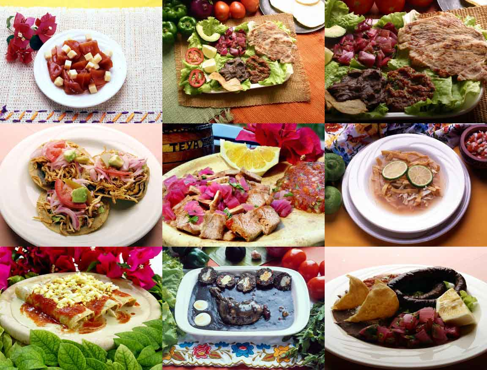

Entre sus platillos más famosos se encuentran: la sopa de lima, un delicioso caldo de pollo desmenuzado, tostadas y jugo de lima; los huevos motuleños, huevos fritos sobre una tostada cubierta de fríjol refrito aderezada con salsa de tomate, jamón picado y queso blanco desmenuzado; pollo pibil, piezas de pollo marinadas en achiote, jugo de naranja agria, ajo, comino, sal y pimienta, envueltas en hoja de plátano y horneadas. Este platillo al hacerse con puerco se llama Cochinita Pibil; poc-chuc, finas rebanadas de puerco asadas, marinadas en jugo de naranja agria, servidas con una salsa y cebolla picada; panuchos y salbutes, tortillas de maíz con pollo, lechuga y cebolla, los panuchos llevan fríjol dentro de la tortilla; papadzules, huevos duros picados dentro de una tortilla cubierta por una salsa de semilla de calabaza; y fríjol con puerco, se sirve con arroz, cubierto con salsa de tomate y aderezado con rábano, cilantro y cebolla.
Además de los grandes guisos también se puede disfrutar los famosos antojitos como los codzitos, tortilla enrollada a modo de taco sin relleno, bañado en salsa de tomate y queso sopero espolvoreado; y el Tzikil Pac, crema preparada con tomate y semillas de calabaza molidas.
De postre se utiliza muy comúnmente frutas como la papaya, la yuca y el cocoyol endulzados con piloncillo.